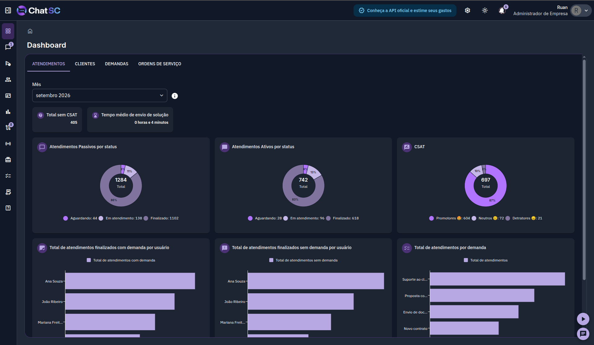
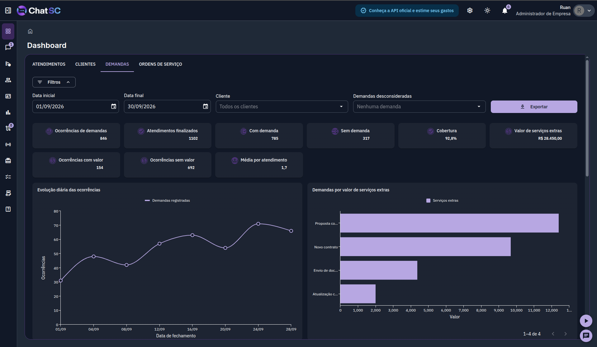
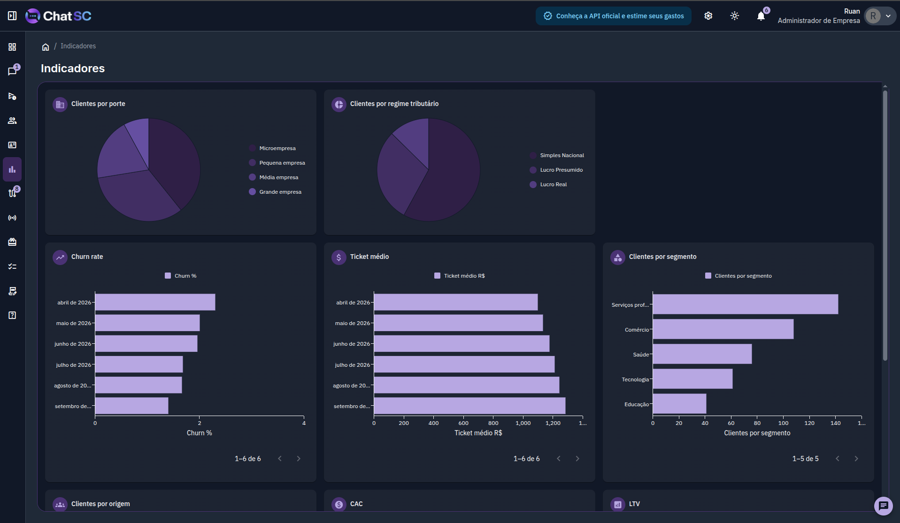

Atendimento organizado
Reúna conversas, histórico e equipe em uma operação compartilhada. Múltiplos usuários, filas e estados de atendimento.
Centralize conversas, distribua atendimentos, organize demandas e acompanhe a execução do que cada cliente solicita — tudo conectado à rotina contábil.
Solicitações se misturam, o histórico fica preso em pessoas, os responsáveis não estão claros e a gestão perde visibilidade.

A resposta do ChatSC
Uma plataforma construída para a realidade dos escritórios contábeis: do primeiro contato pelo WhatsApp até a execução interna, com responsáveis, prazos e indicadores em uma única operação.
Conhecer a plataformaUm fluxo contínuo que conecta atendimento, organização e operação — sem perder o contexto do cliente em nenhuma etapa.
O cliente envia uma mensagem pelo WhatsApp e a conversa chega automaticamente ao ChatSC.
O ChatSC centraliza a mensagem, identifica o cliente e organiza o atendimento na fila.
A conversa é distribuída para o usuário ou departamento correto com regras de roteamento.
A solicitação vira uma demanda, tarefa ou ordem de serviço com responsável, prazo e status.
Prazos, estados e responsáveis são monitorados em tempo real pela equipe e pela gestão.
Indicadores de CSAT, SLA, tempo de resposta e desempenho da equipe disponíveis no dashboard.
Interface real do ChatSC — organizada, intuitiva e feita para a rotina do escritório contábil.
Acompanhe em tempo real: filas de atendimento, CSAT, SLA, demandas por usuário e desempenho de toda a equipe.
Todas as conversas do WhatsApp num só lugar, organizadas por status, com identificação automática do cliente.

Visualize volume, cobertura, valores e evolução das demandas para orientar a operação do escritório.

Acompanhe perfil da carteira, churn, ticket médio e segmentos em uma visão gerencial.
Cada recurso foi desenvolvido pensando na rotina real dos escritórios contábeis.
Reúna conversas, histórico e equipe em uma operação compartilhada. Múltiplos usuários, filas e estados de atendimento.
Mantenha informações, contatos, demandas, tags e jornadas em uma visão conectada de cada cliente.
Transforme solicitações em tarefas e ordens de serviço com responsáveis, prazos e estados claros.
Acompanhe clientes em onboarding, implantação e processos recorrentes com etapas ordenadas e indicadores de atraso.
Organize listas de transmissão, mensagens agendadas, campanhas e comunicações automáticas com controle de envio.
Acompanhe agilidade, SLA, satisfação (CSAT), demandas e desempenho da equipe em um dashboard completo.
Com a modalidade Coex, seu número permanece ativo no app enquanto toda a equipe atende pelo ChatSC simultaneamente.
Com a modalidade oficial Coex, o mesmo número pode continuar ativo no aplicativo WhatsApp Business enquanto a equipe realiza os atendimentos pelo ChatSC — sem precisar trocar de número ou abandonar o aplicativo que você já usa.
Consulte informações dos sistemas utilizados pelo escritório sem interromper o atendimento ou perder o contexto do cliente.
API Oficial com modalidade Coex — atenda pelo ChatSC mantendo o WhatsApp Business ativo no celular.
API Oficial MetaImporte clientes, consulte processos, solicitações e entregas sem sair do contexto do atendimento.
Integração nativaVincule cadastros, busque clientes e consulte tarefas e informações operacionais durante o atendimento.
Integração nativaMais visibilidade para a gestão. Mais contexto para quem atende. Mais continuidade para quem executa.
Acompanhe filas, SLA, satisfação, demandas e desempenho da equipe em tempo real.
O atendente acessa histórico, demandas, jornadas e integrações sem perder o fio da conversa.
Da mensagem à ordem de serviço: cada solicitação tem responsável, prazo e estado rastreável.
Resultados reais de quem transformou o atendimento com o ChatSC.
★★★★★Antes perdíamos solicitações no WhatsApp toda semana. Com o ChatSC, cada demanda tem um responsável e um prazo. A equipe trabalha muito mais organizada.
★★★★★A integração com o Acessórias mudou nosso atendimento. Consigo ver o que o cliente precisa sem sair da conversa. Muito mais agilidade no dia a dia.
★★★★★O dashboard de indicadores me deu uma visão que nunca tive antes. Agora sei exatamente onde a equipe está com dificuldade e consigo agir rápido.
Sem taxas ocultas. Comece agora e escale conforme crescer.
Para operações enxutas começarem bem.
Perfeito para empresas iniciantes.
Ideal para empresas em crescimento.
Para empresas com operações avançadas.
Sem fidelidade. Cancele quando quiser. Suporte incluso em todos os planos.
Agende uma demonstração gratuita e veja como o ChatSC pode transformar a operação do seu escritório contábil.